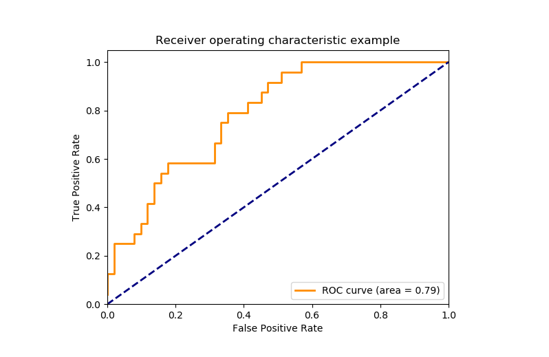
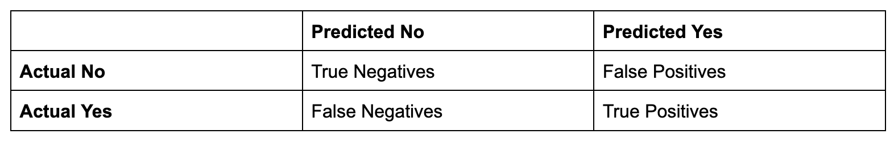

Machine learning is a tool that has applications in a variety of
different fields. It has rapidly gained popularity and usage in recent
years due to larger datasets and improved computational power. Machine
learning uses statistical methods to make predictions or decisions about
data. Computers learn and improve based on data without being explicitly
programmed. Machine learning tools are used for image and speech
recognition, natural language processing, and other tasks in a wide
variety of fields.
The goal of this site is to provide an introduction to the fundamentals of machine learning and its applications
on an accesible and understandable platform. There are many different coding languages used for machine learning, and Python is one of the most popular.
Python has many libraries for machine learning and data preprocessing. This website will use Python and its libraries to implement machine learning. While not required,
some background experience with Python will be useful.
The models described in this website include:
Logistic regression
Linear regression
Random forests
Support vector machines
Below is information related to machine learning that will be useful as you enter this field!
Key ML Concepts
Supervised vs. Unsupervised Learning:
Supervised learning: Models are trained using data with known outcome values (labeled data). This is common in speech recognition, medical diagnoses, fraud/spam detection, and product recommendation.
Unsupervised learning: Models process large amounts of unlabeled data and organize it by similarities and differences. This is common with data that has natural patterns, such as in fraud detection, customer segmentation, and content recommendations.
Basic Steps of Machine Learning:
Data collection: large amounts of data are gathered
Preprocessing: the data is cleaned, which involves removing duplicate/missing values, standardizing numerical values, and converting categorical data into a format that computers can read
Model selection: choosing a model that is relevant for the specific task
Training: the model is given training data so it can adjust parameters to make accurate predictions. A larger training data set will result a more accurate model.
Testing: the model is given a new data set that it hasn’t seen before (testing set) to measure its performance
1
Overfitting vs. Underfitting:
Overfitting: the model becomes too specialized to the training data and does not generalize well to new data
Underfitting: the model is too simplistic and misses important patterns in the data
There are many different metrics used to evaluate machine learning models. Here are a few commonly used ones:
Accuracy: Number of correct predictions / Total number of predictions
Precision/Specificity: True Positives / True Positives + False Positives; Measure how many of the model’s positive predictions are correct. This metric is useful when the cost of having false positives is high, such as when making medical diagnoses.
Recall/Sensitivity: True Positives / True Positives + False Negatives; Measure of how many actual positive cases were correctly identified. This metric is useful when missing a positive case is more costly than false positives.
F1 score: 2 * (Precision * Recall) / (Precision + Recall); combines precision and recall into a single number where a higher F1 score indicates better performance.
Area Under Curve (AUC) and ROC curve: the AUC represents the probability that the model will rank a randomly chosen positive value higher than a randomly chosen negative value. The ROC curve is a graphical representation of the True Positive Rate (TPR) vs. the False Positive Rate (FPR):

Confusion Matrix:

Mean Squared Error (MSE): Calculates average of the squared differences between the predicted and actual values. Squaring the difference penalizes larger errors more heavily.
Root Mean Squared Error (RMSE): Square root of MSE; this brings the metric back to the same scale as the data, making it easier to interpret.
R-squared: The proportion of variance in the dependent variable that is predictable from the independent variable, which is helpful in assessing goodness of fit for regression models.
3
Common Applications of Machine Learning
Healthcare: machine learning models can detect patterns in patient records, genetic data, and medical imaging to identify medical conditions or tailor treatments. Predictive analytics are also useful for estimating patient admission rates and optimizing staffing
Finance: machine learning models can analyze transactions and flag suspicious activity. Models are also used to determine credit scores based on a variety of factors, analyze markets, and automate trading.
Retail: many platforms use machine learning to analyze consumer behavior to give personalized recommendations. Machine learning is also used to manage inventory and provide customer service chatbots.
Transportation: machine learning is used in self-driving cars and predicting mechanical failures in vehicles before they occur.
1
Coding Resources
There are many different free, online platforms for coding.
If you are just starting out with coding, Google Colab is a good place to start. Colab is a free, cloud-based platform where users can write and run Python on their own computers.
To access, visit Google Colab
and sign in with your Google account.
Many of these tutorials use Scikit-learn, an open source Python library that contains many tools
for machine learning and statistical analysis. The full documentation for Scikit-learn can be found
here.
Feel free to
email Emma Abecasis
if you have any questions or suggestions about the website!